Off-Hours.
Two things have followed me across every place I've lived: a rifle range and a kitchen. One rewards holding still. The other rewards adjusting fast. I've needed both.
Michigan Rifle Team.
since 2025.08I shoot air rifle and three-position relays with the Michigan Rifle Team. Precision rifle is mostly not about the shot — it's about controlling everything that happens before it. Breathing, position, trigger break, and the discipline to do it identically every time. Repeatability under pressure is the entire sport, which is probably not unrelated to why I ended up drawn to process work.
3P Relaydisciplines
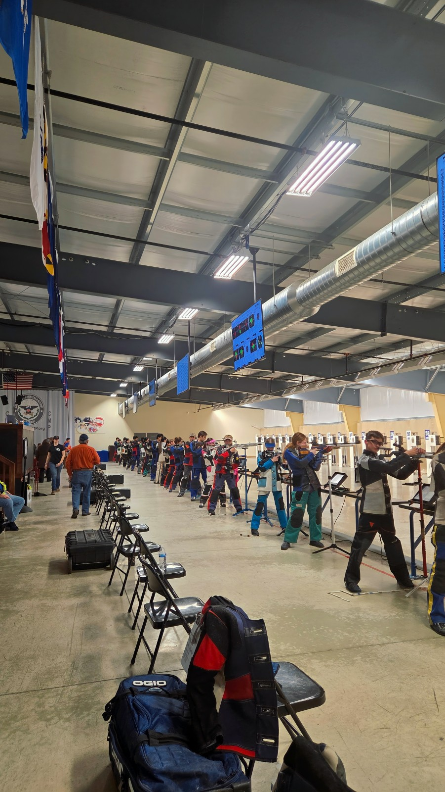
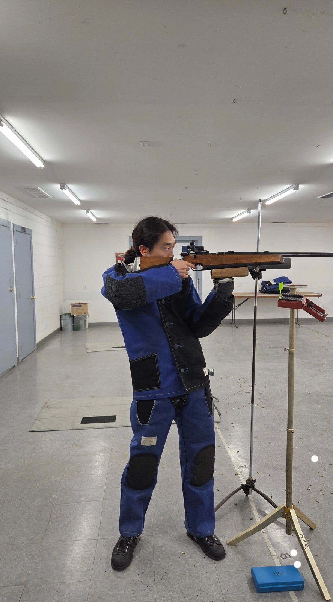
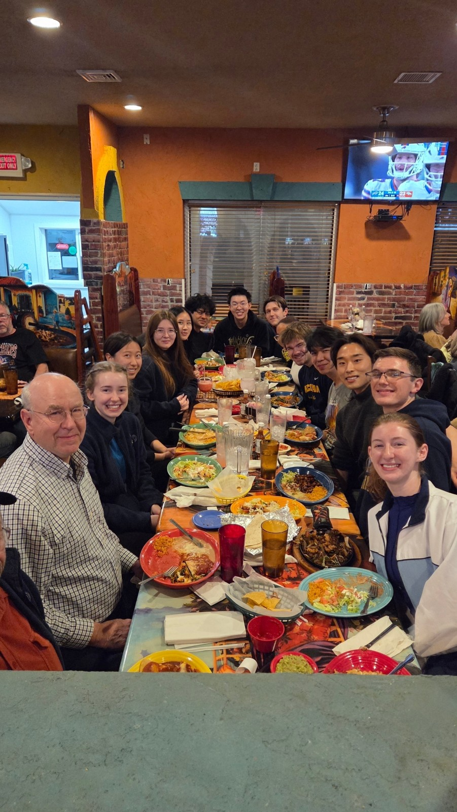
Kitchen.
since 2021Cooking is how I meet people. I show up somewhere, cook Korean food for friends who have never eaten it, and by the end of the night they're teaching me theirs. In Poland that meant standing at a counter learning to fold pierogi from people who had grown up folding them. It goes both directions, and that's the part I actually travel for.
The food never stays Korean, because the ingredients aren't there. Gochujang cut into tomato sauce becomes a calzone base. Bulgogi ends up in a tortilla in Mexico. What survives the substitutions is the part worth sharing anyway — the way a table works when everyone is eating something unfamiliar at the same time.
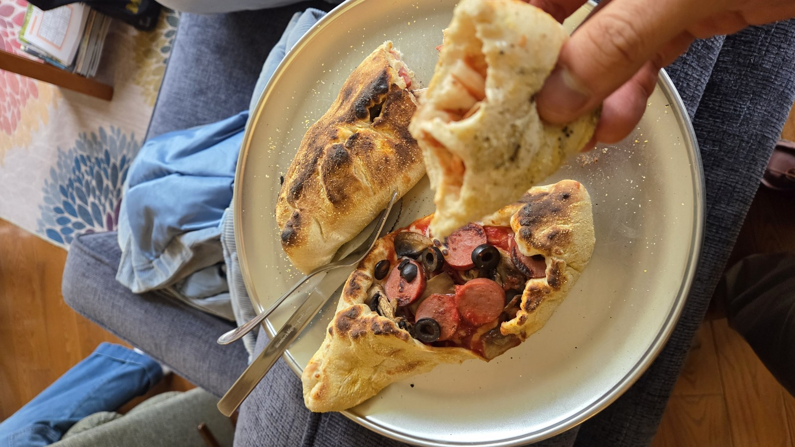
United States · 2026
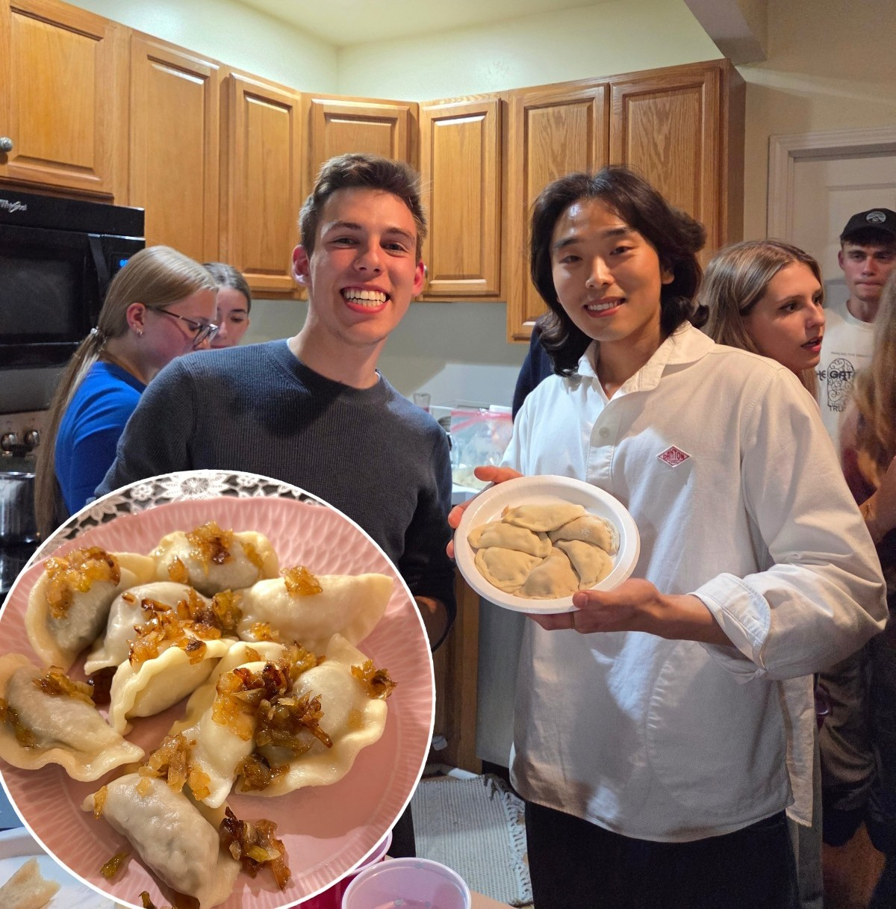
Poland · 2024
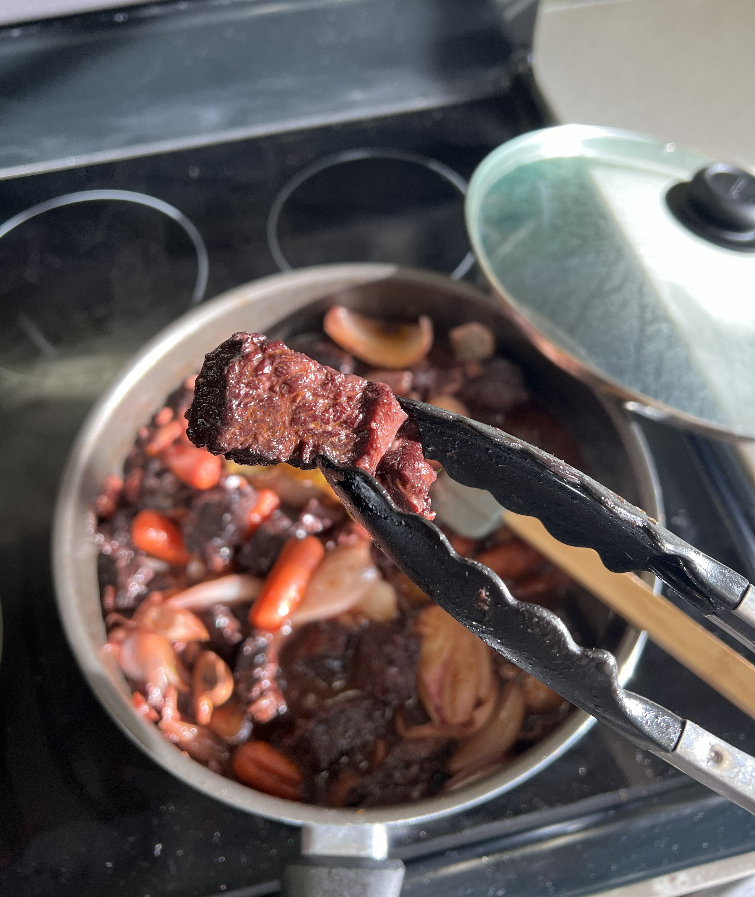
Mexico · 2023
Travel.
selected · 2023 — 2026Places I've cooked in, shot in, or just walked around for a while. Six frames out of a longer list that starts in Japan, 2021.
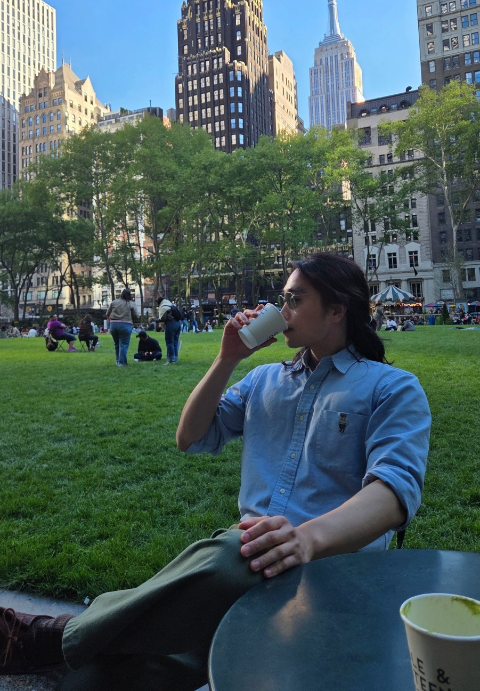
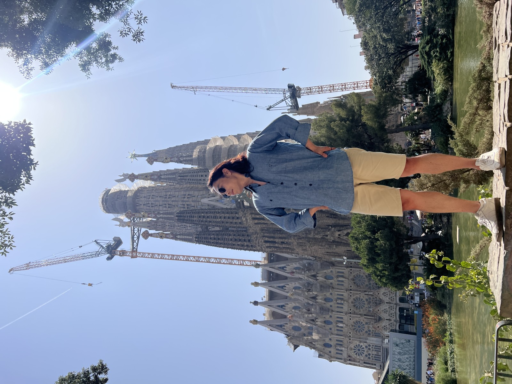
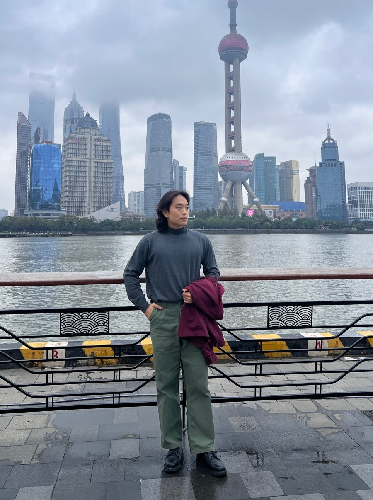
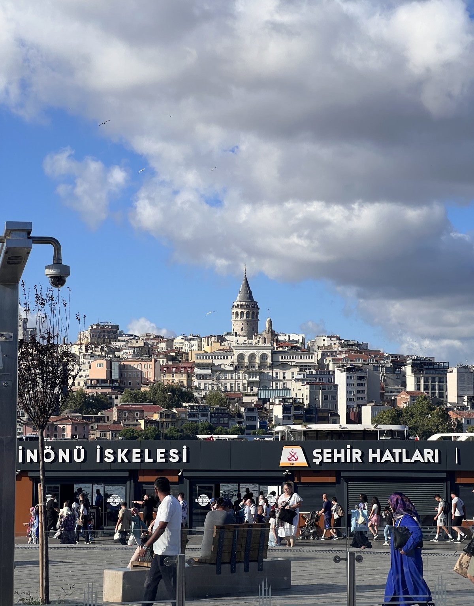
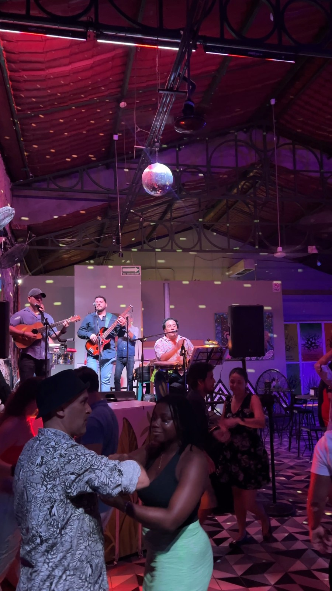